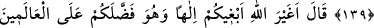

İSRÂİLOĞULLARI’NA
LUTFEDİLEN NİMETLER
138. İsrailoğullarını denizden geçirdik, orada kendilerine mahsus birtakım putlara
tapan bir kavme rastladılar. Bunun üzerine: Ey Musa! Onların tanrıları olduğu gibi,
sen de bizim için bir tanrı yap! dediler. Musa: Gerçekten siz cahil bir toplumsunuz,
dedi.
139. Şüphesiz bunların içinde bulundukları (din) yıkılmıştır, yapmakta oldukları da
bâtıldır.
140. Musa dedi ki: Allah sizi âlemlere üstün kılmışken ben size Allah’tan başka
bir tanrı mı arayayım?
141. Hatırlayın ki, size işkencenin en kötüsünü yapan Firavun’un adamlarından
sizi kurtardık. Onlar oğullarınızı öldürüyorlar, kadınlarınızı sağ bırakıyorlardı. İşte
bunda size Rabbiniz tarafından büyük bir imtihan vardır.
“İsrâiloğulları’nı denizden geçirdik” Bu deniz, Kızıldeniz’dir. Bu denizin Mısır’da
bulunan Nil nehri olduğunu söyleyen, hata etmiştir. el-Kâmûs’da denilmiştir ki:
(Arapça’da) Kızıldeniz’in ismini aldığı “Kulzüm”, Mısır ile Mekke arasında Tûr
dağına yakın bir yerde bulunan bir beldenin ismidir. Çünkü bu belde denizin bir
tarafındadır. Ya da içine girenleri yutup boğduğu için bu denize bu isim verilmiştir.
Çünkü “kulzüm” kelimesinde “yutma” mânâsı da vardır.
Rivayete göre Mûsâ (a.s.)’ın İsrâiloğulları’nı denizden geçirdiği gün Âşûrâ günü idi.
Allah Teâlâ’ya bir şükür nişânesi olarak bu günü oruçlu geçirdiler.
“kendilerine mahsus bir takım putlara tapan” onlara ibâdet etmeyi alışkanlık hâline
getiren “bir kavme rastladılar:” Rastladıkları kavim, Kenanlı Amalika kabilelerinden
biri olup Mûsâ (a.s.) onlarla savaşmalarını emretmişti. Bunların aslen Yemenli olan
Lahm kabilesinden olduğu da söylenmiştir. Cahiliye döneminde Arapların melikleri